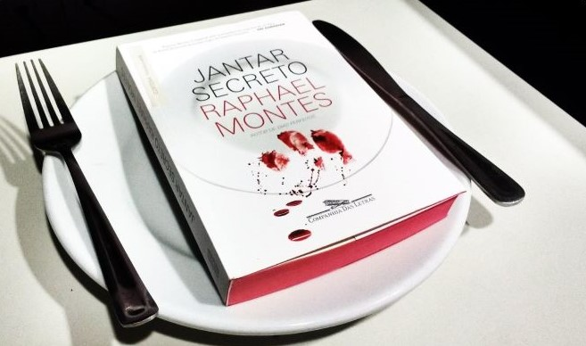

Talvez um dos melhores thrillers brasileiros

Antes de começarmos a nossa maravilhosa resenha, vou apresentar um enigma que esta presente no livro O Jantar Secreto e quero que escreva abaixo a sua resposta para o enigma. Um sujeito estava andando pela rua quando deparou com um restaurante que vendia carne de gaivota. Pediu a carne, comeu, foi para casa e se matou. Por quê?
Apresentando o Autor
Raphael Montes nasceu em 1990, no Rio de Janeiro. Escritor e roteirista, publicou os romances Suicidas, Dias Perfeitos, O Vilarejo, Jantar Secreto e uma Mulher no Escuro, vencedor do Prêmio Jabuti 2020. Seus livros estão traduzidos em mais de 25 países e têm os direitos de adaptação vendidos para o teatro e o cinema. Escreveu os filmes Praça Paris, A Menina que Matou os Pais e O Menino que Matou Meus Pais. É criador, roteirista-chefe e produtor-executivo de Bom dia, Verônica, série de sucesso na Netflix, vencedora do Prêmio APCA 2020 nas categorias melhor ator, melhor atriz e melhor dramaturgia.
Outras Obras do Raphael Montes
Sinopse de "O Jantar Secreto"
Um grupo de jovens deixa uma pequena cidade no Paraná para viver no Rio de Janeiro. Eles alugam um apartamento em Copacabana e fazem o possível para pagar a faculdade e manter vivos seus sonhos de sucesso na capital fluminense. Mas o dinheiro está curto e o aluguel está vencido. Para sair do buraco e manter o apartamento, os amigos adotam uma estratégia heterodoxa: arrecadar fundos por meio de jantares secretos, divulgados pela internet para uma clientela exclusiva da elite carioca. A partir daí, eles se envolvem em uma espiral de crimes, descobrem uma rede de contrabando de corpos, matadouros clandestinos e grã-finos excêntricos, e levam ao limite uma índole perversa que jamais imaginaram existir em cada um deles.
Como se desenvolve a narrativa
Jantar Secreto é um livro que começa devagar, mas instigante, e que vai aumentando a velocidade ao longo dos capítulos. Entenda velocidade como quantidade de acontecimentos aterrorizantes em um curto espaço de tempo e de palavras. O tal jantar secreto ocorre logo nos primeiros capítulos, o que me fez pensar: "e agora, o serão dessas 250 páginas restantes?", mas eu mal sabia que o jantar em si não era o principal evento da história. Narrado em primeira pessoa, na figura do protagonista Dante, um dos 4 jovens que saem do interior do Paraná, Pingo D'água, para ganhar a vida do Rio de Janeiro, Jantar Secreto releva ser um livro sobre relações pessoais e uma forte crítica à nossa sociedade de consumo. O primeiro jantar secreto é motivado por uma dívida acumulada por alugueis não pagos pelos rapazes. Os 4 estudantes se endividaram em 30 mil reais e para quitar a dívida pensam em diversas soluções. Fazer jantares secretos no apartamento deles para uma boa saída, já que Hugo é cozinheiro, Dante lida bem com a parte administrativa do negócio e Leitão é um ótimo estrategista digital. Porém, de forma despretenciosa, Leitão anuncia que o jantar seria com carne humana. O preço? R$ 3.000,00 por pessoa. Um jantar com dez pessoas seria o suficiente para quitar a dívida. Após bastante discussão, o jantar canibal acontece e o grupo conhece Umberto, um velho rico e poderoso, que se mostra encantado com o jantar. Ele propõe ser sócios dos rapazes, com o objetivo de expandir o "negócio". Novamente há bastante discussão, mas eles acabam repetindo o evento diversas vezes. Tudo ia muito bem, os jantares faziam sucesso e os 4 rapazes estavam muito bem financeiramente. Dante, entretanto, estava afundado em drogas e não tinha mais controle sobre si. Leitão, estava apaixonado por uma garota de programa, Cora. Hugo, havia se tornado um chef de cozinha especialista em carne humana. Miguel, médico, continuava a não concordar com os jantares, mas fazia vista grossa. Em um determinado momento, Dante, que sempre conferia quem era a pessoa a ser "consumida" no jantar, recebe um panfleto de um sujeito em um bar. Esse sujeito, Arthur, estava procurando a sua noiva sumida e Dante sabia quem era ela. A mulher, Ruth, havia sido comida no jantar passado. Até então, apenas indigentes e pessoas mortas de causas naturais seriam utilizadas no jantar, mas Ruth fora assassinada sem motivo aparente. Esse fato fez com que Dante começasse a investigar Umberto e um tal de Vladimir, suposto chefão do esquema. Mesmo com os jantares acontecendo, Dante não se cala, o que se torna um problema para o negócio.
"Jantar Secreto" vale a pena?
O livro é bastante sangrento e não é recomendado para pessoas sensíveis. O nível de detalhes sobre e como é preparada a carne humana chega a chocar. Se isso não for um problema para você, siga firme com a leitura porque o livro é bom. Montes consegue empregar um bom ritmo de leitura, fazendo com que a leitura de suas 360 páginas não seja sentida. O livro é recheado de surpresas e reviravoltas, com uma narrativa bem amarrada e sem furos. Se você gostou da resenha, comente aqui e me diga a sua experiência com o livro. Até o próximo texto